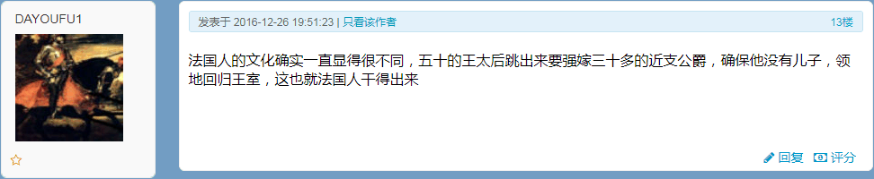
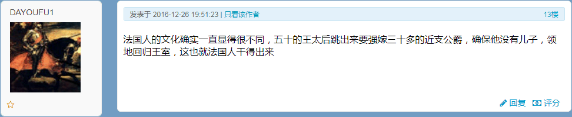

洗完澡了精神抖擞容光焕发，上网乱转发现国际化大都市「华语第一精日论坛」正在首页今日头条位置醒目应景推荐了一条色目含量难以判断的重要情报：

特意连着版规和站规一起备份，甚至懒得点开正文，压根不操心文曲星如何绘声绘色图文并茂的贩卖焦虑时运用的修辞伎俩，是为了论证活蹦乱跳的色目情报掮客和娱乐至死の色目逗哔只能通过娱乐新闻至少社会新闻指桑骂槐了。
也就是说，现在「知名育儿博主」相关放风带节奏，已经尽可能避免九点四亿傻哔联想到当年「嫡母」江青与「庶子」毛岸英之间从「豪门恩怨伦理剧」上纲上线到「九龙夺嫡宫斗剧」最终以「金戈铁马战争剧」为掩护实现牝鸡司晨女主临朝的色目钦定大目标。
至于为什么不能涉及「国外政治」，之江临安「原创文学论坛」之上就有反例，也是导致《设定集》剧情构思的重要素材，已经在注释〔卌六〕当中备份过：
 

看时间戳，还是2016年中和年底，虽然美帝灯塔国党の川普大统领候选人已经浮出水面，但是高卢国搭档古董花瓶的小鲜肉还没有。转过年来妈控才会以「黑马」形象另组第三方势力一路青云直上主席台，相关的情感话题才会在繁荣的简体中文互联网上广泛传播。直到最近，娱乐至死の色目逗哔二次元重度依赖症患者对《新时代复印战士》钦定大结局破口大骂如丧考妣，是不是九点四亿傻哔当中才有个别乙醇脱氢酶和乙醛脱氢酶分泌量较高于是清醒较早的记忆只有七秒钟的人民群众想明白前因后果了呢？
好了，「法兰西宫廷作风」与现实壹壹对应的来龙去脉已经大白于天下了，接下来轮到了「英吉利宫廷作风」了也。哎呀，「一说这个」，想必又有大批捧哏的朋友接下茬「那我可就不困了吖」，尤其是身处其它时区的读者。目前还没有时事新闻可供对照，哪怕知名赘婿薨掉那时候都没有任何色目情报掮客不打自招爆料泄漏（南不列颠及北爱尔兰）国家机密兼（跨国娱乐大鳄IP）宇宙奥秘，于是要按照职业习惯「严密的考虑问题」并且「料敌从宽」。
参考市面上曰若稽古流指桑骂槐，说「老佛爷」请来温莎家法把「珍妃」沉塘已经二十五年了，「光绪」还没挂么？无论「世上岂有七十年太子乎」持续到啥时候为止，即位的肯定是学龄前童年才俊并且有亲爹将其按在龙椅上哄着「快完了，快完了」……谁能应谶？当然是「焦治七世」George Alexander Louis Mountbatten-Windsor
了，于是查尔斯和威廉的下场，已经被好莱坞幕后黑手「制片人」钦定了，正在伦敦外景片场摄影棚当中彩排。
当然，正如知名篮球巨星神户在胡蜂看来不过是古罗马角斗士一般货色，退休了没有利用价值了就应该随着本尊谢幕而超度往生，但是了不起的盖茨比尔这种根红苗正的胡蜂待遇就不一样，即便英吉利老佛爷丧偶，这边影武者也就离个婚而已，所以查理三世和威廉五世的退场镜头，未必那么血腥，只不过一定会搞笑而已。
直说了吧，目前推测的最大可能性，就是上述「英吉利宫廷作风」的爆料，导致爷儿俩纷纷放弃继承权，一个是「第二代温莎公爵」，一个开先例封为「初代蒙巴顿公爵」，只要以铺天盖地的划时代娱乐新闻转移七八十亿傻哔视线以掩盖「王室丑闻」，这事就这么过去了。具体操作也有先例，正如爱德华八世「不爱江山爱美人」那样随便找个借口，太子已经有卡米拉了，太孙再找个美国寡妇出轨，老婆凯特再被妯娌梅根隔海嘲笑，然后离婚即可。
然后就看见了一条标着「育儿」标签的自由の言论，于是准备搜集「知名育儿博主」在全球兴风作浪的情报：


迅速浏览一遍，发现了「神户陨落（The Fall of KOBE
）」与「无产阶级韬光养晦企图革命未果沦为笑柄，极端组织已渗透至德意志民族神圣罗马帝国高层」俩关键字。
就事论事的回复也能往「家贼不死，球难未已」之类「无能狂怒」之上靠拢，与之前反复强调的重要指标「家贼预期寿命指数」有关。具体解读有两种：或者是现在正在炒作的「续命擂台赛」包括但不限于「天荒地老谁不老，谁为啥啥续疫苗一秒」之类顺口溜；或者「知名育儿博主」是法人而不是自然人，只要现金流不断就可以永生。
至少能当素材吧。
又在兲子脚下首善之区「黄脖子绿帽二代论坛」之上发现了一条色目含量甚低的重要情报：
这不是「娱乐新闻」而是「政治新闻」，参考哥萨克酋长国泽连斯基大盖特曼的先例，至少能判断出「摄影棚」覆盖范围。
可以操纵当地局势的前提，就是出动大手情报机构将党政军财各个要害部门渗透得如同筛子一般，还有强力手段对不甘心扮演记忆只有七秒钟的傻哔群众演员的人民进行严厉打击和残酷镇压，更要把持舆论喉舌宣扬「一力降十会，咋地吧」并出动党性坚定的老审查员将所有持不同学术观点者的「自由の言论」以「政治敏感」理由「亦当删去」。
喝多了回来了，简单写几句睡了。
迅速转了一圈，搜集到的情报及其言简意赅解读如下：
还在调查是吧？已经确定了不是啥「意外事故」了吧？大手媒体怎么放风带节奏也不能洗地了是吧？再看幕后黑手「制片人」惦记着在黎巴嫩搭建「摄影棚」的阴谋诡计是否能得逞。
暂时保留意见，可以作为《异闻录》当中根据国际卫生组织对「新时代王冠」的官方命名「COVID-19
」之北约音标字母呼号当中最后一块拼图「天竺」线索的素材。
现在差不多九点四亿傻哔都知道了，「马云」也是白手套，那么凭啥认为了不起的盖茨比尔不是呢？有根红苗正的胡蜂护身符在，如同古罗马角斗士那样上演「神户坠落」退场镜头的可能性不大，临终前放飞自我爽一把就挂，球安民乐岂不美哉？
唔，没有被鲜卑丐帮弟子破门而入唠唠叨叨瞎鸡巴忙活搞垮的大手金融机构，开始「复仇」了吖？
现在的福布斯榜上，扎克伯格排名第五，前面四个都离婚了，就看这个「伪装成下半身体液互换的外交关系」啥时候宣告终结。另外还得看娶了普莉希拉・陈的「中国女婿」的炒作风向啥时候消停，当年美籍黄皮猴子邓文迪「…♪…叽叽叽叽叽叽…♫…这只爱情麻雀飞上枝头变成凤凰了…♬…」的时候，繁荣的简体中文互联网上炒作「中国女婿」的声浪一点不比昨天炒作了不起的盖茨比尔小，但是默多克的名声，有一丁点好转么？
不说啥了，活蹦乱跳的色目情报掮客还没解读完呢，看来搭档古董花瓶的小鲜肉角色，不只是法兰西观众爱看，英吉利观众也差不多。
与前面一条情报交相辉映。
刚爬起来酒劲还在头昏脑胀，上网乱转没发现什么色目含量甚高的重要情报，简单搜集了些素材。
首先是继奥地利瑞穗、苏台德瑞信之后，波兰瑞银已经有危机意识开始「排队」了：
至于「损失不能归咎于某个人」外交辞令，就是「鲜卑毒贩休想扔出一个只会唠唠叨叨瞎鸡巴忙活的退役丐兵顶缸」，否则一定会大事化小小事化了罚酒三杯下不为例下次还敢。
然后是色目含量足够但是重要性有待提高的情报，因为没有直接与法兰西第五共和国搭档古董花瓶的小鲜肉妈控大统领联系起来：
明年妈控竞选连任之前，肯定会有更多色目含量爆表且重要性超标并且人民群众喜闻乐见的情报充沛在繁荣的简体中文互联网上，相比之下现在搜集的只能当素材。在注释〔６５〕当中提到了，以本位面历史上真实存在的采用一块红板当纹章的达布莱家族，在架空中顶替名为「红盾」却不使用一块红布蒙住兲的色目豪门罗特希尔特家族。
再往后就涉及到「渎圣同盟」合纵连横的现实反映了：
这套路，看着眼熟不？
注意到普莉希拉・陈并不是等到邓文迪与默多克离婚之后才与扎克伯格结婚，所以才说对应本位面历史浓缩在架空当中的情节。
第七篇设定《浓墨重彩抹黑洗白》当中已经出现了德意志民族神圣罗马帝国「停战之后立刻招了大批土耳其人」，直到第一辑末尾才开始挑明以罗马军运会闭幕为渎圣同盟条约终止日期引发至少七拨特务在巴尔干兴风作浪，第二辑才开始描写法兰西王国是如何逐步疏远土耳其人并殃及希腊人。这是在同一个时间段之内发生的事情，全是渲染氛围的「前传」，远没到幕后黑手「制片人」所钦定的杀伐果断通权达变狠角色横空出世的「正传」。
直截了当的解读很通俗：1999年6月25日，山东济南人民的好闺女邓文革，与始终代表了传统媒体的默多克，正式签署了《渎圣同盟条约》，一直延续到2013年11月20日。而条约到期之前，就有始终代表了新兴媒体的扎克伯格，与普莉希拉・陈签署了《渎圣同盟v2.0条约意向书》，于是北京字节跳动科技有限公司于2012年3月成立了。这背后的色目情报掮客各个阵营之间势力的此消彼长，都体现在繁荣的简体中文互联网上四万万五千万幽灵在谁或啥的集中统一领导下一边炒作「搭档美籍黄皮猴子的中国女婿」一边追着中国籍汉族人狂喷「反汉贱种中国通」的舆论当中。
至于为啥始终代表了媒体的白皮「契丹胡蜂」，即便「和亲」了也不能集体「内迁」，只能化整为零以十五个大手名校传媒专业高材生为单位组织游击小队于境内成立公关公司并被「马云」收购从而「可找到组织了」然后从此服从境外渎圣势力中央的集中统一领导，还得说我中华兲嘲上国自有国情在此，所有媒体一律划归为党或团或队的喉舌，由根红苗正忠君爱国的百善の新时代中国特色社会主义接班人把持，包括但不限于南山必胜客、龙岗必胜客。
所以，在第二辑当中，对于已经出现的幕后黑手制定《舔狗条例》明文规定的用于攻击正面人物的「反德贱种汉萨通」「反法贱种高卢通」之类行业不文明用语固定字眼，在官方话语体系当中统一称呼为「境外渎圣势力」，并以「定是收了卢布月球狗粮到账」作为《论辩的魂灵》。
到这里需要解释之前构思中的一处破绽，等了几天没看见相关爆料。就是砥砺奋进的前五年「偏殿影子孩子内阁」的构成，公开报道刘云山也是「有一子」但是故意没提到，市面上色目情报掮客也故意装作看不见。理由在当时很充分，现在时过境迁可能记忆只有七秒钟的九点四亿傻哔已经想不起来了。
那时候有舆论宣称「刘云山身上有专案组，说出事就出事」「老大用周永康开刀打破“刑不上常委”的先例，准备更进一步不仅清算退休常委还要拿下现任常委」「刘大公子没戏了」，与此同时开始炒作「刘允斌自绝于中南海之谜」并引用刘源原话称「刘少奇确实是在河南唯一有暖气的建筑当中白衣天使的悉心照料下病死的，刘允斌不是蒋经国」然后掰开了揉碎了解读当时我中华兲嘲上国政治规矩和组织纪律都不需要「苏联女婿」要坚决与对岸上梁不正下梁歪的刮民党反动派划清界限。
当时的正面宣传当中，习禁评和刘源都是「大公无私」的典型，说户口本爹被大救星打倒，拨乱反正之后仍然谆谆教导下一代，于是成长为坚定的「毛派」。习仲勋开创了「利用小说搞反党活动乃一大发明」先例，刘少奇更是准备把紫禁城改建为总统府改朝换代，如果大救星不发动群众运动，刘少奇就登基称帝了，九大拖了八年才召开就是为了清洗紧密团结在以刘少奇为核心的白区骨干周围的两万多名实权干部。
在之前提到了，曾有「杠精」引经据典说当时党章规定中央任期五年，后八年都是非法执政，还提到了在莫斯科召开的六大明确规定「对土匪的关系」导致井冈山「依法治国依章治党」于是枪毙王佐袁文才「既实践了实质正义也履行了程序正义」，遭遇根红苗正忠君爱国的流氓无产阶级革命战士迎头痛击「嗤，枪杆子里面出政权，人民民主专政铁拳一力降十会，咋地吧」「大救星万岁万岁万万岁」……这里不再重复。
这些现实情报对于剧情的促进作用，在「翻旧账的前传」阶段，还是《二狗舔三仕》那种原型，按照「无一字无来历」职业习惯引用的参考资料也是在2016年中：
而砥砺奋进八年半以来，以国际化大都市「华语第一精日论坛」和九省通衢の煎蛋为主要宣传阵地的色目情报掮客，炒作过「足控」「舔脚」相关内容，号召九点四亿傻哔衷心拥护的目标都是「短裙凸凹翘的二次元童年雌性」。那些肉麻素材不做备份，仅仅不惮以最大的恶意揣测「九斤老太」号召下一代以实际行动向自己学习向自己致敬，否则就是「一代不如一代」。
具体到架空的角色，「丹丹・刘维尔」影射的就是刘亭亭，找到的法文谐音名字按照法语发音才变成「丹丹」，也是比利时画家埃尔热笔下角色，于是顺便把对应的舔狗命名为「米卢」，除此之外再无碰瓷，经典二次元大作《丁丁历险记》当中出现的其它角色不会用于致敬。比方说「Tintin
」这名字本身都应该是埃尔热生造的，毕竟没出现在新华通讯社译名室编、商务印书馆出版的《法语姓名译名手册》当中，这就是先例。找不到谐音名字的只能生造了，自打殖民时代以来的法语和英语一样，词源极大充沛，拼写的异族语乃至无意义音节也充沛在工具书当中，可以随意发挥。
篇幅够长了，简单说，预定中影射「下一代」的三巨头，就是习忒鲁瓦、李晓虹娜、张基耶娃，在另外一个舞台上出场，不会与始终代表了「九斤老太」的这三位前辈混淆。至于张家为何如此活跃，也是参考了杨国忠送了四个姐妹进宫之后的要求是替俩「飒爽美舅舅」翻案的历史典故，可见其「人脉」覆盖范围。